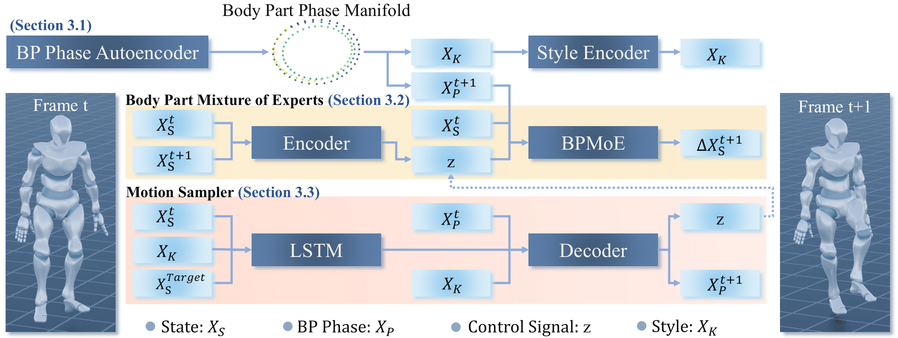

Controllable motion in-betweening is essential for character animation, particularly when fine-grained control over both motion style and dynamic attributes is required. However, existing approaches typically model style using full-body motion representations, limiting their ability to independently manipulate the motion characteristics of different body parts. In this work, we introduce a novel phase-based framework that enables part-wise control over both motion style and dynamics. We first derive body-part-specific phase features using a kinematic-chain-based decomposition, allowing each limb to be represented in its motion phase space. Building upon these features, we develop a body-part-phase-based style encoder that captures part-level stylistic attributes and supports flexible style modification across different limbs. To regulate dynamic attributes such as amplitude and frequency, we further propose a Part-Aware Motion CVAE, whose phase-conditioned Body Part Mixture of Experts (BPMoE) decoder predicts motion transitions from the current motion state, body-part phases, and a latent control signal. By modulating the input phase features, our framework precisely adjusts the temporal dynamics of targeted body parts while maintaining global motion coherence. Experiments on the 100STYLE dataset show that our method enables fine-grained body-part control, produces consistent long-horizon sequences, and achieves smooth style transitions.
